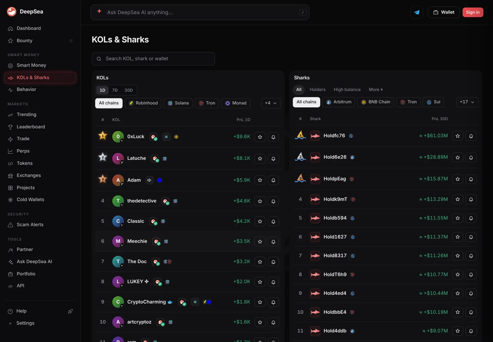

Bitcoin fell 8.5% in a week, XRP 20%, zcash 25%. Sharks did not dump bitcoin or ether
CoinGecko's 7-day numbers show the big coins sliding together. DeepSea's 24-hour shark table shows big wallets near flat on bridged bitcoin and ether, buying ARB and WLD and selling OP.
Key points
- At 12:48 a.m. ET on November 12, 2026, CoinGecko showed bitcoin at $73,521 (down 8.5% in 7 days), ether at $2,044.52 (down 15.4%), XRP at $1.042 (down 20.2%) and zcash at $983.84 (down 25.2%).
- In DeepSea's 24-hour shark table, flows in bridged bitcoin and ether were close to even, with small net buying.
- The biggest one-sided moves were in smaller tokens: sharks bought $3.65 million of ARB and sold $771, and sold $3.64 million of OP against $2.34 million bought.
 What DeepSea's data shows
What DeepSea's data shows
DeepSea's 24-hour flow table (built 12:47 a.m. ET) adds up trades by wallets it tags as sharks, large and active traders, on the networks it tracks for this table, such as Arbitrum, Optimism, Avalanche and Monad.
In bitcoin and ether, sharks were not dumping. On Avalanche, bridged ether (WETH.e) saw $2,714,667 bought and $2,635,032 sold, and bridged bitcoin (BTC.b) $2,147,075 bought and $2,083,483 sold, mostly from two fast-trading wallets. On Monad, sharks bought $1,157,386 of WETH and sold $454,475. On Arbitrum, WBTC was even at about $45,000 each way.
The one-sided moves were elsewhere. ARB: $3,646,224 bought, $771 sold. WLD on Optimism: $3,175,240 bought, $1,431,837 sold. On the sell side, OP: $3,643,011 sold, $2,337,699 bought. XRP and ZEC do not appear in the table.

Data: DeepSea (desea.io), checked November 12, 2026, 12:47 a.m. ET.
The week in prices
New to the tools? Read what DeepSea is.
Bitcoin traded at $73,521, down 8.5% in 7 days and 0.4% in 24 hours. It sits about 42% below its record of $126,080 from October 6, 2025. Ether was $2,044.52, down 15.4% in a week and about 59% below its record. XRP was $1.042, down 20.2%. Zcash fell the most of the four, 25.2% to $983.84.
This week, the larger the coin, the smaller the drop.
7-day price change
percent
At 12:48 a.m. ET, November 12, 2026. Source: CoinGecko.
What it means
Prices here come from CoinGecko and flows from DeepSea. On the chains DeepSea tracks here, big wallets were not running from bitcoin and ether in the last day. Their net buying was small next to the size of the market. Their biggest bets were token specific, led by $3.65 million of ARB bought against $771 sold. The table shows trades on these networks only, not exchanges or other chains, and it does not show who is behind the wallets.

LC Insight analysis
This section is our reading of the facts above, not a statement of fact.
- We think the shark data points to picking spots rather than a rush for the exit: near-even flows in bridged BTC and ETH, with large single bets in ARB and WLD.
- One day of flows on a few networks cannot explain a week-long drop, so this is a snapshot, not a turn.
- The ranking was clean: the larger the coin, the smaller the weekly drop, from bitcoin's 8.5% to zcash's 25.2%.
What's next
- Whether bitcoin holds above $73,000
- Whether shark flows in bridged BTC and ETH turn into clear net selling
- Whether zcash and XRP keep falling faster than bitcoin
Disclaimer. This article is based on public information and the sources listed below as of the update time shown. It is for information only and is not investment, legal or tax advice. Figures may change as companies and authorities publish new data.
Sources
- CoinGecko, Bitcoin (BTC) price and history (read November 12, 2026, 12:48 a.m. ET)
- CoinGecko, Ethereum (ETH) price and history (read November 12, 2026, 12:48 a.m. ET)
- CoinGecko, XRP price (read November 12, 2026, 12:48 a.m. ET)
- CoinGecko, Zcash (ZEC) price (read November 12, 2026, 12:48 a.m. ET)
- DeepSea, live flows by token and wallet, 24 hours (read November 12, 2026, 12:47 a.m. ET)
- DeepSea, sharks page (read November 12, 2026, 12:57 a.m. ET)